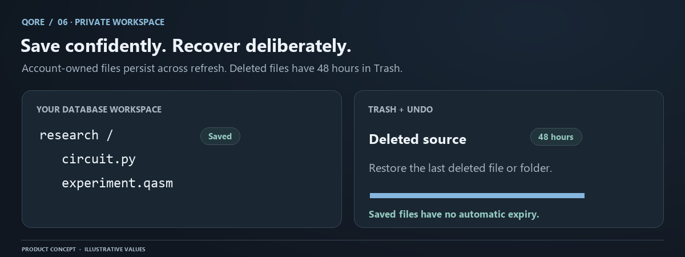

Files, folders, saving, and recovery
Explorer contains editable files and folders. Browser storage preserves the visible workspace across refreshes. Server workspace records use a stable UUID, relative path, source ki
Conceptual workflow. Numerical evidence and save status come from your actual QORE session.
Explorer contains editable files and folders. Browser storage preserves the visible workspace across refreshes. Server workspace records use a stable UUID, relative path, source kind, version, timestamps, and an opaque browser scope. A path rename changes the location without pretending that the file is a new record.

Create and edit
Create a file or folder in Explorer. Select a file to open its source and visible path. Python and QASM circuit files can run through the supported quantum pipeline. JSON and Markdown are editable content, but they do not become quantum programs merely because they appear beside a circuit.
Use meaningful relative paths such as research/ghz.py. Path validation prevents parent traversal and unsafe host-filesystem access. A workspace path names a QORE record; it does not grant access to arbitrary files on the server. The console refers to the active buffer and its path, not the container's general filesystem.
Save status and interruption
Wait for saved status before closing a tab. Browser storage retains the editor source immediately. Pending means a secondary server write has not completed; failed means that action needs attention. Neither message deletes the browser draft.
On reconnection, version checks protect newer server content. If another tab modified the record, a stale update returns conflict. Preserve your current text, inspect the server state, and decide which version to keep. Repeatedly resending the old version is not conflict resolution.
Rename a subtree
Folder renames rewrite descendant paths atomically. The database validates every affected destination before applying the change. Descendant edits also advance relevant folder versions, preventing a stale folder action from ignoring concurrent work below it.
Finish pending file writes before a large reorganization. Avoid simultaneous renames in multiple tabs. Stable IDs keep the active file linked to its record when a rename succeeds. If any destination conflicts, the subtree remains unchanged; the UI should display the failure rather than a partly renamed tree.
Delete and recover
A delete removes an entry from active Explorer and records a deletion timestamp. Deleting a folder creates one batch for its active subtree. Primary-bar Undo restores the last deleted batch. Trash lets you inspect and restore another eligible file or folder.
Recovery lasts exactly 48 hours from deletion. At the cutoff, the API and database deny access and restoration. Scheduled cleanup removes expired source rows every five minutes, with additional request cleanup. Backups follow a separate operator retention policy, so this window is not a claim about erasing every backup copy.
Restore checks every path before changing a batch. If another record occupies a destination, nothing is partially restored. Rename the occupying record, then retry. Expired content cannot be recovered by sending a stale cached PUT. Tombstones retain opaque identity only, preventing old clients from recreating deleted source without keeping its original path or contents.
Quotas and evidence
| Constraint | Value |
|---|---|
| Entries per browser workspace, including Trash | 1,000 |
| Aggregate UTF-8 source, including retained Trash | 16 MiB |
| Source per file | 32 KiB |
| Deleted-content recovery | 48 hours |
| Automatic expiry of active files | None |
Trash counts toward quota until expired content is purged. Export important work before clearing browser data or reorganizing many folders. Workspace recovery is distinct from Ledger history: deleting an editable file does not rewrite immutable experiment evidence. See workspace API for exact version semantics and backups for service-level disaster recovery.